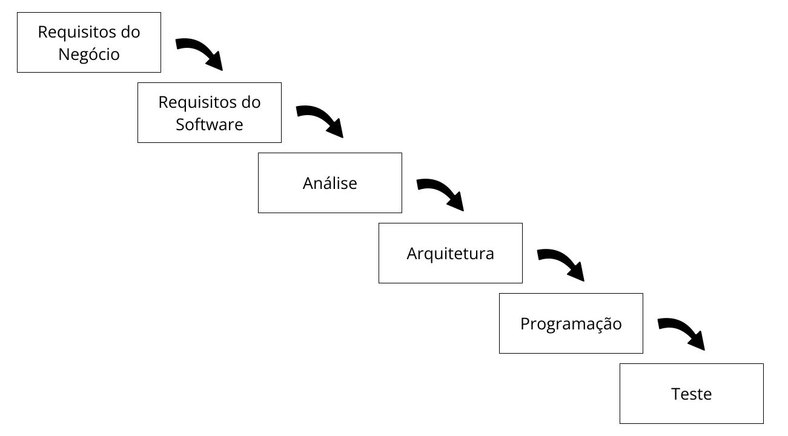
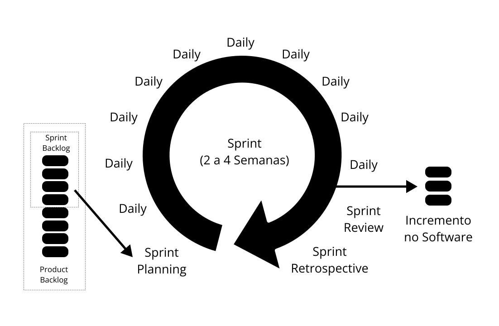
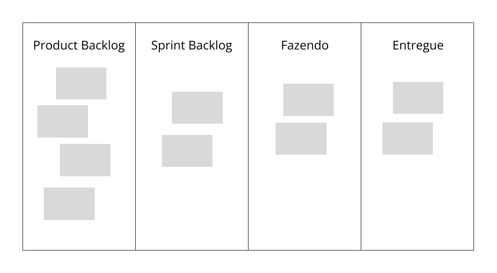
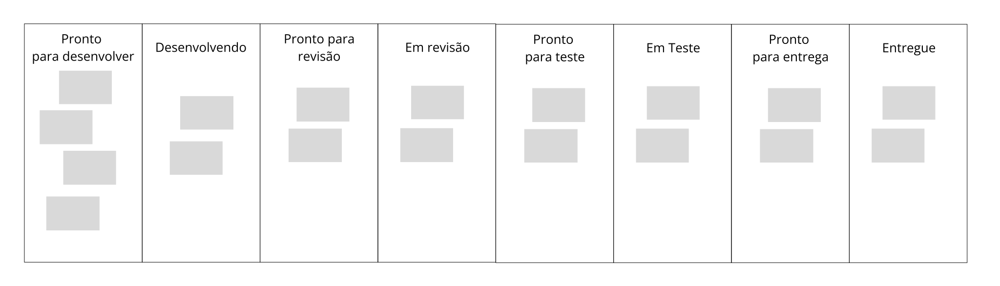

Quero Virar PM
Um guia de transição de carreira para product management
Introdução
Olá tudo bem? Eu me chamo Paulo Hecht e estou aqui para te ajudar a migrar para a área de produto em uma empresa de tecnologia.
Nos últimos anos, trabalhando na liderança de times de produto, eu tenho observado um movimento cada vez maior de profissionais buscando uma transição de carreira para produto. Presenciei transições de profissionais de diversas formações: Arquitetos, Nutricionistas, Educadores Físicos, Fisioterapeutas, Turismólogos, Cientistas Sociais, Contadores, dentre tantos outros. Desses, eu tive o privilégio de mentorar diretamente algumas pessoas para que dessem os primeiros passos nessa transição.
Este material nasce dessa experiência e da vontade de compartilhar, de maneira estruturada, direta e acessível, o que aprendi ao longo dessas mentorias. De forma que esse conteúdo possa atingir ainda mais pessoas. Meu objetivo é criar um repositório definitivo de conhecimento, um guia prático que possa servir como uma bússola para aqueles que querem vir para produto e não tem a menor ideia de como começar.
Se você está lendo isso, já é bem provável que esteja considerando essa transição (até mesmo porque eu mesmo devo ter te passado o link). Minha expectativa é que, se você ler todo esse conteúdo vai ter clareza de quais são os próximos passos e bastante domínio sobre como funciona a área com todos os seus jargões para se sentir seguro ao sentar pra bater um papo com seu primeiro entrevistador.
Nas próximas sessões vou te explicar sobre o contexto da área que vem se transformado com a velocidade da inovação, te contar como é o trabalho típico de um PM, te mostrar algumas das ferramentas que fazem parte desse dia-a-dia, te ensinar os macetes para conquistar o seu primeiro emprego te introduzindo ao ecossistema, conceitos, vocabulário e referências da área, de forma que você se sinta confiante ao conversar sobre o trabalho de um PM.
Vamos juntos nessa. E conte comigo se precisar bater um papo a mais.
Paulo Hecht
https://www.linkedin.com/in/paulohecht/
Por que você quer virar PM?
Das pessoas que eu conversei, um dos motivos é unânime para querer encarar essa transição. E aposto que você sabe qual é! Se pensou em salário, acertou! A oportunidade de trabalhar em times de tecnologia vem com um ganho salarial bastante relevante em relação às demais profissões do mercado. Estamos falando de em apenas alguns anos atingir salários de R$ 12.000 a R$ 20.000... NO BRASIL!!! REMOTO!!! TRABALHANDO DE CASA!!! Se inglês ainda for sua praia e você se jogar, você pode ultrapassar US$ 120.000 por ano! Deixo pra você fazer as contas com a cotação atualizada.
Mas espere! Você não vai sair ganhando dinheiro sem experiência nenhuma - na verdade, a chance é grande de você até já começar com um salário acima da média da sua área na largada - mas quero garantir que entenda que a experiência é o combustível que vai te ajudar a chegar cada vez mais longe. E essa experiência vem muito rápido, e, diferente de muitas outras áreas, não tem limites para o quão longe você chega.
Se eu ainda não te convenci falando sobre o salário e as oportunidades de carreira porquê você ama sua área de formação, saiba que existe uma empresa de tecnologia lá fora fazendo um produto digital dentro do domínio da sua área que pode se beneficiar muito de um PM como você. Sim, até mesmo a SUA formação! Pode dar um pouquinho mais de trabalho encontrar e conquistar uma oportunidade específica assim, mas não é impossível. A grande questão é que você não precisa desistir dos seus sonhos para fazer essa transição, basta dar uma pequena ajustada multiplicando seu potencial de impacto por milhões.
A área de produto é também o canal para você entrar em uma empresa moderna. A oportunidade de aprender, no dia-a-dia sobre como essas empresas operam é algo inigualável. Com o passar dos meses, você vai aprender por osmose conceitos de Tecnologia, Marketing, RH, Financeiro, etc. ampliando seu conhecimento e aumentando exponencialmente seu leque de possibilidades no mercado. Isso sem contar o desenvolvimento de habilidades pessoais como liderança, comunicação, negociação, solução de problemas. Depois de entrar na área, cada ano que passa é um ano de empoderamento profissional de fato.
Enfim, pode pular que a água tá quentinha!
O que faz um PM?
O Product Manager em uma empresa de tecnologia é a pessoa que faz o produto acontecer! Ele navega entre as áreas da empresa alinhando as expectativas e passa uma boa parte do seu tempo trabalhando lado a lado com o time de tecnologia para garantir que o produto evolua trazendo mais resultados.
A essa altura, você provavelmente já ouviu o jargão de que o PM é o "CEO do produto" certo? Então vamos começar desouvindo? Quem inventou isso provavelmente não tem a menor ideia do que o CEO faz, suas responsabilidade e prestação de contas. A maioria esmagadora dos PMs nunca precisou chegar perto de um DRE, tomar paulada em uma reunião de conselho apresentando um planejamento estratégico anual, ou lidar com problemas jurídicos. Vai na minha, é bem mais fácil focar na sua transição de carreira para PM com humildade e pé no chão.
Quero ser bem claro em relação a isso, pois quero te preparar para o mundo real, e esse mundo real é bastante diferente da linketopia em que PMs em começo de carreira dizem que tomam decisões estratégicas que determinam o futuro de toda a empresa. Eu te garanto que com muito trabalho, sua hora vai chegar, mas vamos começar fazendo o básico bem feito. Além disso, eu quero que você sinta segurança para fazer essa transição numa boa, sabendo que a vida real de um PM, na verdade, é mais simples do que você imagina.
Seja mais jornalista investigativo que inventor visionário.
Enquanto todos acham que o arquétipo do PM deva ser o do Inventor Visionário, eu acredito que o arquétipo do jornalista investigativo se encaixa muito melhor. Explico. O papel do PM não é inventar o próximo facebook. O papel do PM é capturar oportunidades de negócio brotando por todas as áreas da empresa e, investigar, de ponta a ponta, o quanto essa oportunidade realmente impacta no negócio. Internalize essa definição simples e sua vida será muito mais fácil.
Tudo, absolutamente tudo, que é feito em um produto, parte de uma oportunidade de negócio que alguém pensou que pudesse melhorar os resultados da empresa. As ideias que deram errado, tanto quanto as que deram certo, partiram de alguém cheio de boas intenções que acreditava que iria fazer a empresa crescer. Essas oportunidades são as entidades básicas com as quais um PM trabalha, pense nelas como hipóteses na forma: Se eu fizer X no produto, vou ter um resultado Y no negócio. Como um jornalista que recebe um lead para uma matéria, o PM precisa averiguar suas oportunidades coletando evidências de que essa ideia dá certo ou mesmo, de que não dá.
Estamos indo bem: Oportunidades e evidências - guarda direitinho esses termos que nós vamos repetir bastante eles.
Do outro lado, o PM, em uma empresa de tecnologia, dita o que o seu time de desenvolvimento irá trabalhar. Geralmente esse time é composto por programadores e designers que podem alterar o produto de fato. Ao meu ver, construir e alterar produtos é basicamente uma consequência do mesmo desafio de averiguar se uma oportunidade é verdade ou não. Para me acompanhar nesse raciocínio, precisamos entender que a evidência final para saber se uma ideia funciona ou não é colocá-la em prática. Sem isso, você nunca tem todas as variáveis que precisa pra determinar com exatidão que ao fazer X você impacta Y no seu negócio. Mesmo quando tudo parece apontar em uma direção, você só descobre mesmo mesmo mesmo é colocando X no ar e medindo seu impacto no mundo real. É claro que um time de tecnologia é um recurso caro, e usá-lo é um investimento que precisa ser muito bem considerado, por isso, priorização é outro ingrediente muito importante nessa receita. No geral, a regra base é trazer para ser desenvolvida aquela oportunidade, entre todas capturadas, que você acredita que você tem evidências mais fortes de que irá funcionar gerando o melhor resultado com o menor custo e esforço para o time de desenvolvimento colocar no ar.
Mas atenção, seu trabalho não termina uma vez que algo foi para o ar. Não não. Seu trabalho só termina quando você constata se aquela oportunidade que perseguiu funciona ou não. Você se surpreenderia ao ver no mercado quantos PMs acabam resumindo todo o seu trabalho a colocar coisas no ar. Isso acaba criando incontáveis polêmicas e conflitos sobre o assunto onde dedos são apontados para os mais diversos culpados e até surge o arquétipo do PM garçom que pega pedidos de cada área para trazer para o time de desenvolvimento fazer e "entrega". Não dê espaço para essa polêmica. Você é o único responsável por resignificar essa dinâmica. O problema, é que um PM não pode evitar que as áreas queiram desenvolver algo, e na real, que bom que elas querem, vai por mim, você não ia querer estar em uma empresa onde ninguém quer que as coisas evoluam. Aí então, é mais uma questão de como você encara isso. Você pode chamar isso de pedido, levar para o time de desenvolvimento e passar sua carreira reclamando que está trabalhando de garçom ou você pode vestir a roupa do jornalista investigativo e encarar essa ideia como uma oportunidade e averiguar se ela realmente faz sentido e traz os resultados ques se esperava para o negócio.
Você não precisa ser o garçom
Se você se deixar transformar no garçom, sua vida profissional se tornará básicamente responder a mesma pergunta para diversas pessoas: "Quando meu pedido fica pronto?". E pode ter certeza, nunca conseguirá responder. Digo isso com certeza pois o seu time também não vai conseguir te dar estimativas claras, nunca. Vale a pena te contar que isso não é má vontade ou falta de experiência do time (pelo menos na maioria das vezes), isso é uma característica inerente a desenvolvimento de produtos de tecnologia. Projetos de software e principalmente de inovação são impossíveis de serem estimados por natureza. É mais fácil você entender isso e aprender a trabalhar com o seu time do que levar a pergunta pra eles "quando o pedido do X fica pronto?" em cada reunião e se frustrar.
Para se proteger, vamos começar do começo. Existem duas perguntas que um PM precisa necessariamente ser capaz de responder a qualquer momento:
- No que seu time está trabalhando agora?
- Por que seu time está trabalhando nisso?
Ao respondê-las, você já tem a segurança que precisa para alinhar as expectativas com todos os times que te geraram demandas.
Qualquer pessoa que discorde com a sua priorização precisa ter uma forte tese sobre o porquê seus pedidos são mais importantes do que o que o seu time está trabalhando agora. Dê o benefício da dúvida e parta do princípio que podem estar certos, mas abra o seu processo que envolve eleger aquela oportunidade com menor esforço, maior resultado e melhor evidência. Com o chapéu do jornalista, é hora de entrevistar quem está demandando algo como mais importante, e você precisa extrair todas as informações chave como resultado esperado e nível de evidência. Essa não é uma tarefa simples, mas o exercício ajuda todos a ficarem na mesma página. Eu vou descrever esse processo mais detalhamente nas próximas sessões.
Mas também não se engane. Seu time de desenvolvimento continua custando para a empresa mesmo quando está parado. A questão de priorizar oportunidades com menor esforço, maior resultado e melhor evidência é, por natureza, relativa. Se você não tem na manga uma oportunidade com uma forte evidência, não adianta reclamar do universo dizendo que algo não pode ser desenvolvido pois precisa de mais investigação. Mantenha seu time de desenvolvimento ocupado com o que você tem de melhor no momento.
Existe na comunidade de PMs um bode expiatório a que chamam de HiPPO (do inglês, Highest Paid Person Opinion, ou a opinião da pessoa que ganha mais) como se esse fosse o responsável por todos os problemas da empresa a o motivo de o PM não estar brilhando como deveria. Não caia nessa não. Eu prefiro chamar o HiPPO de MEPO (Most Experienced Person Opinion) e essa opinião tem muito valor no seu trabalho. A questão é que é o seu trabalho é capturar essa opinião na forma de uma oportunidade e investigar as evidências que existem se essas ideias são boas ou ruins para então priorizá-las. Sejamos francos, enquanto você não tem uma ideia melhor e com mais evidências, a ideia de uma pessoa mais experiente é um presente para você.
Mas vamos lá, isso significa que você nunca vai ser o inventor visionário que tem uma ideia brilhante e muda o jogo da empresa? Não. Como eu disse o seu papel é capturar oportunidades brotando por TODA a empresa, e isso obviamente inclui você mesmo. Não vale roubar o jogo e ser parcial, mas se você realmente acha que a próxima coisa a se trabalhar é algo que brotou da sua cabeça, vá em frente, investigue o caso e priorize de acordo. Só garanta que estão todos alinhados e conscientes do seu critério na hora de priorizar. Seja metódico e pragmático.
Enfim, para simplificar e fechar essa sessão, eu encaro o PM como sendo a pessoa responsável por gerir - coletar, investigar, desenvolver e analisar - oportunidades de negócio em um produto.
Senta que lá vem história
Acho que para entender a fundo a posição de um PM em um time de tecnologia é essencial entendermos um pouco do contexto histórico em que estamos. Nem sempre houve essa alta demanda pela posição. Para falar a verdade, nem sempre ouve a posição.
No começo, era cascata
Vamos começar relembrando o óbvio: Fazer software é algo extremamente novo! É importante compreender isso antes de sair apontando dedos e jogando pedras. Em pleno 2024 ainda estamos descobrindo quais as melhores formas de fazer software, imagine nas décadas onde tudo era novidade, desde computadores a linguagens de programação. Pois bem, para gerenciar grandes projetos de software, não restavam muitas alternativas se não fazer o mesmo que para gerenciar qualquer grande projeto de alguma outra coisa. Basicamente levantar todos os requisitos necessários, construir e depois ver funcionando.
Vale reforçar que fazer desse jeito não foi uma decisão pensada mas muito mais a consequência de traduzir o que funcionava no mundo hard para o mundo soft. Tanto é que não existia nem um nome para esse jeito de fazer software até que, em um artigo de 1970, Winston Royce mapeou a metodologia e a apelidou em tom sarcástico de Cascata (Waterfall) dada sua propensão a demoranar.

O modelo cascata, onde tudo despenca.
Apesar de a própria nomenclatura surgir de um artigo que cita o modelo como um mal exemplo por conta de suas limitações, o Modelo Cascata foi amplamente difundido e com ele vários papéis eram necessários: O analista, o arquiteto, o qa, e, coordenando tudo isso, um papel bastante comum em outros tipos de projetos - o gerente de projetos.
E fez-se o Ágil
Na década de 90, bastante impulsionado pelo livro "A máquina que mudou o mundo", o Sistema Toyota de Produção começou a chamar a atenção do mundo, habituado com as linhas de produção fordistas, contrastando as ideias de máxima produção com a de uma produção enxuta e eficiente e culminando na ideia de Lean Manufactoring com conceitos como redução de desperdícios, fluxo contínuo, produção puxada, melhoria contínua, gestão visual, qualidade na fonte e células de trabalho. Todos esses conceitos vieram a influenciar a maneira como as referências do mercado produziam software.
17 dessas referências da indústria começaram a trocar figurinhas entre si sobre suas práticas e decidiram se encontrar em uma estação de ski em 2001 para debater o assunto. Esse encontro resultou no Manifesto para desenvolvivemnto ágil de software o qual estabelicia 4 valores principais:
- Indivíduos e interações mais que processos e ferramentas.
- Software funcionando mais que documentação abrangente.
- Colaboração com o cliente mais que negociação de contratos.
- Responder a mudanças mais que seguir um plano.
E mais 12 princípios amplamente adotados pelos participantes na construção de softwares de sucesso que viraram deixaram a indústria de ponta-cabeça como "A maior prioridade é satisfazer o cliente" ou "Software funcionando é a principal medida de progresso".
A era de ouro do Scrum
Dentre os signatários do manifesto, Ken Schwaber e Jeff Sutherland introduziram uma metodologia que revolucionou a indústria de software por muito tempo - o Scrum. A metodologia é tão simples que cabe em duas páginas, o Scrum Guide. Em ciclos curtos (sprints) de 2 a 4 semanas, com poucas cerimônias, o Scrum garante uma entrega contínua de valor a cada ciclo. Os times de desenvolvimento focados em resultados passaram a aplicar o Scrum no seu dia-a-dia e com ele introduziram os dois papéis que iriam moldar a indústria dali em diante: O Scrum Master e o Product Owner.
O resumão dessas duas páginas é basicamente o seguinte:
- O Product Owner (PO) mantém uma lista priorizada de coisas que precisam ser feitas (o Product Backlog).
- Numa cerimônia chamada Sprint Planning, o PO apresenta para o time o que está no topo da lista e o time se compromete com aquilo que acredita que consegue entregar na Sprint de 2 a 4 semanas, o objetivo da sprint.
- O time trabalha durante a sprint matando cada demanda e se reúne diariamente na Daily Meeting para cada um dizer o que fez, o que vai fazer e se levantarem a mão se encontraram algum impedimento que os impeça de entregar o objetivo da sprint.
- No fim da sprint o time apresenta para o PO o que entregou em uma cerimônia chamada Sprint Review.
- Depois, o time se encontra em uma cerimônia chamada Sprint Retrospective para discutir os pontos positivos e negativos daquele ciclo e garantir uma melhoria contínua no processo.
- O Scrum master (SM) é quem coordena as ações para que esse processo aconteça com fluidez e garante que as cerimônias são respeitadas (inclusive a duração máxima) e ajuda a desenrolar os impedimentos.

O Scrum.
Estamos falando de uma época em que times de desenvolvedores eram basicamente programadores e esses papéis eram distribuídos entre membros do time que decidiram introduzir o scrum sem precisar aumentar gente nos seus times. Era comum encontrar embaixo do monitorzão de tubo de raios catódicos, junto com os livros de programação, alguns que tinham tudo a ver com gestão de produtos.
Foi com o tempo que esses papéis viraram posições e, a medida que as vagas eram preenchidas por scrum masters e product owners exclusivos, as carreiras se desdobraram virando uma nova indústria onde gerentes de projeto, que perderam seus espaços com o fim da cascata, puderam se realocar.
O Kanban
Junto com o Scrum, era bastante comum a adoção de técnicas e estratégias de suporte. O Kanban foi uma dessas que casou perfeitamente com a metodologia.
O Kanban nasceu no Sistema Toyota de Produção e ele é um quadro onde as demandas em cartões (geralmente post-its) se movem por colunas que representam todas as etapas da produção como "A fazer", "Em progresso" e "Concluído".
Seu uso junto com o Scrum gerou até o apelido Scrumban, onde as tarefas ficavam dispostas em um quadro kanban apelidado de Scrum board, um quadro no qual post-its com as demandas se moviam à medida que incrementos de software eram entregues.

Um Scrum board clássico, ou scrum + kanban = scrumban
Apesar de o scrum ter sido o grande responsável por popularizar a ideia de um time de desenvolvimento trabalhando em torno de um quadro cheio de post-its que se movem a cada etapa da produção, o Kanban enquanto conceito é muito mais amplo e ganhou suas próprias pernas graças ao livro Kanban: Mudança Evolucionária de Sucesso para seu Negócio de Tecnologia de David Anderson em 2004 e passou a ser amplamente adotado como ferramenta de gestão por diversos times de desenvolvimento dada sua flexibilidade e capacidade de se incorporar a qualquer processo de desenvolvimento.

Um kanban tradicional em um time de desenvolvimento
Vamos destacar alguns dos pontos que foram responsáveis pelo sucesso do Kanban como ferramenta de gestão de tarefas:
- Gestão Visual: Por sua natureza, um quadro de kanban consegue transmitir diversas dimensões do fluxo de trabalho a um rápido olhar (muitas vezes até mesmo de forma passiva quando o quadro é físico e está presente no mesmo local que o time realiza o trabalho). Questões como "O que está sendo feito agora?", "Quem está fazendo o que?", "Quais os principais gargalos?", "O que acabamos de entregar?" são facilmente indentificadas visualmente.
- Priorização: É fácil estabelecer quais as tarefas mais prioridades, pois essas são movidas para o topo do quadro.
- Produção Puxada: A produção puxada é um conceito onde o mais importante é finalizar as tarefas que estão mais próximas de ser entregue para evitar desperdícios. O kanban ajuda de maneira prática encorajando o time a resolver as tarefas mais à direita do quadro. A ideia parte do princípio que quanto mais à direita no quadro, mais investimento houve naquela demanda, portanto, fazê-la chegar ao cliente o mais rápido possível é a melhor forma de otimizar os recursos.
- Estados de Fila vs Estados de Trabalho: O kanban ajuda a organizar de forma clara quais demandas se encontram em estados aguardando para que alguém comece a trabalhar nela. Dessa forma fica bastante trivial inferir a eficiência do processo mensurando o tempo gasto em estados de trabalho vs estados de fila e melhor a eficiência alocando mais recursos para minimizar o tempo de fila.
- Limitação de Trabalho: Para os estados de trabalho (Work-in-progress - WIP), o conceito de WIP Limit ajuda o time a focar em entregar aquilo no que já comprometeu seu esforço ao invés de trabalhar em várias tarefas ao mesmo tempo pulverizando o esforço e demorando mais para entregar as demandas.
- Fluxo Contínuo: O objetivo principal do kanban é garantir o fluxo contínuo do trabalho, se algum problem é detectado, resolvemos para que ele se mova sempre para a direita evitando que uma demanda volte para etapas anteriores, garantindo dessa forma uma eficiência maior de entregas.
Histórias de Usuário
Outra ferramenta que se popularizou bastante nesse período, foram as Histórias de Usuário. Essa maneira versátil de explicar um requisito coube como uma luva em processos baseados em post-its dado quão sucinto é o artefato final.
Introduzida na metodologia Extreme Programming de Kent Beck (outro signatário do manifesto) no fim dos anos 90, as histórias de usuário foram bastante aceitas por times de desenvolvimento como uma forma bastante eficiente de detalhar requisitos do sistema.
Mike Cohn, autor de User Stories Applied de 2004, costuma sempre apresentar uma História de Usuário como o agrupamento de 3 "C"s:
-
Cartão: Na frente do cartão, é explicitada a história seguindo a fórmula:
Como {papel do usuário},
Eu quero {demanda a ser desenvolvida},
Para {benefício}
-
Critérios de Aceite: Uma lista que determina o que deve ser verdade para que essa demanda seja considerada pronta de fato. O desenvolvedor só pode dizer que completou a demanda se todos os critérios da lista foram de fato satisfeitos. Se um critério de aceite parece ser muito grande, ele pode se tornar uma nova História de Usuário, garantindo dessa forma que o time trabalhe com demandas bastante concisas.
-
Conversa: As histórias de usuário, conscientemente e oportunamente, deixam bastante margem para interpretação de quem as está desenvolvendo. O terceiro C da lista é a conversa que deve fomentar entre os membros do time para que haja alinhamento em relação à entrega final.
A indústria Agile
Um dos signatários do manifesto original, Dave Thomas, gosta de repetir em seus discursos raivosos como a indústria transformou um adjetivo em substantivo para vender mais e isso matou toda a proposta inicial. O manifesto para desenvolvimento ágil de sofware - onde ágil é um adjetivo caracterizando o desenvolvimento - virou o Manifesto Ágil, e pior, para nós tupinikins criamos ainda mais um passo de distanciamento ao usar o termo inglês Agile.
Com essa embalagem, os valores se perderam, nos pegamos discutindo se valia a pena "Fazer Agile" ao invés de nos tornarmos ágeis. Para ser Agile, e garantir sua carreira como Scrum master ou Product Owner bastava pegar uma das muitas certificações Agile disponíveis no mercado e nos vimos novamente priorizando processos e ferramentas. E com o distânciamento entre Scrum masters e product owners do time de desenvolvimento, o próximo passo foi sucumbir a colaboração e voltar a exigir escopos fechados com documentação explícita e seguir um plano. Foi quando aplicar Agile passou a ser cascatas de duas semanas.
A queda
O que funcionava passou a não funcionar mais, e a idústria correu para suas tochas e rastelos para condenar seus culpados. O Scrum foi o primeiro a cair. A metodologia que antes era garantia de produtividade passou a sublimar sua popularidade pois seu requisito primordial - adotar comprometimento, foco, transparência, respeito e coragem como valores inegociáveis no time - se tornou um preço muito alto para se pagar.
Nessa indústria dinâmica, scrum masters e product owners de carreira preferiram se desvincular da escolha de metodologias e disfarçados de agilistas e product managers passaram a participar do coro gritando que "Scrum não funciona" enquanto a área de Agilidade e a área de Produto garantiam seus espaços em cada empresa de tecnologia.